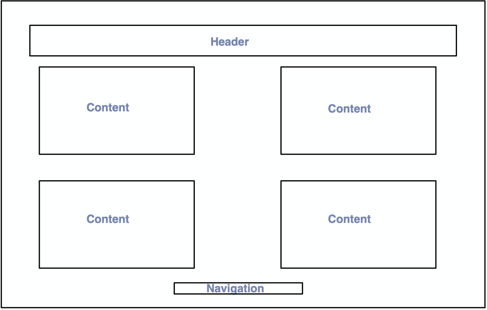
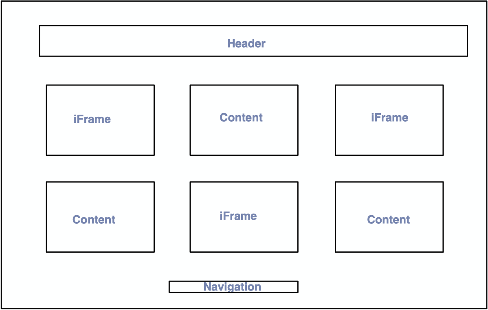
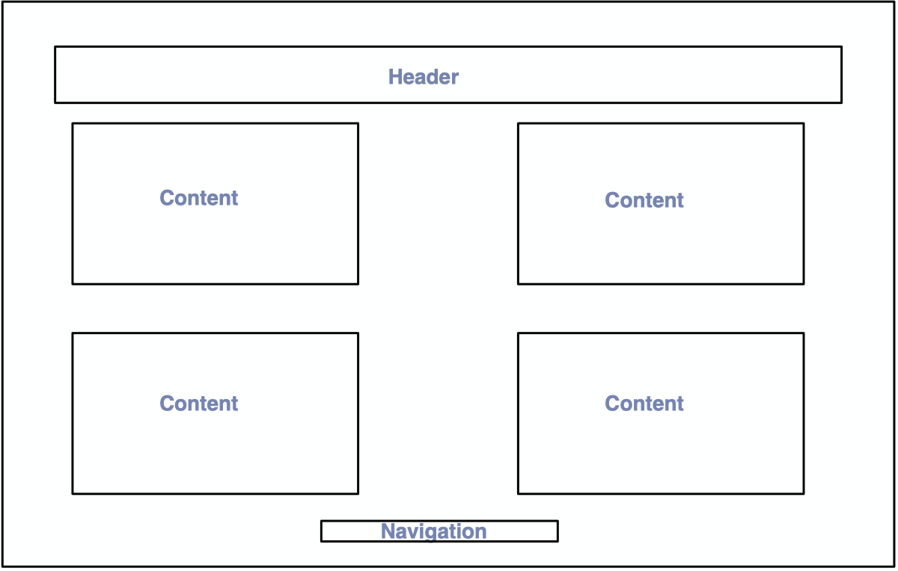
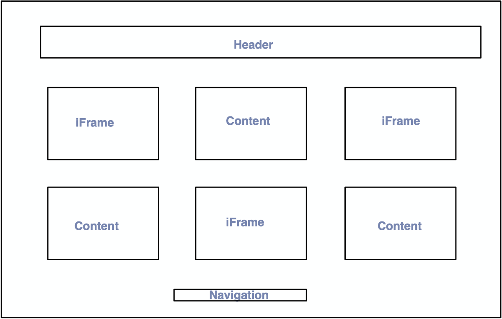
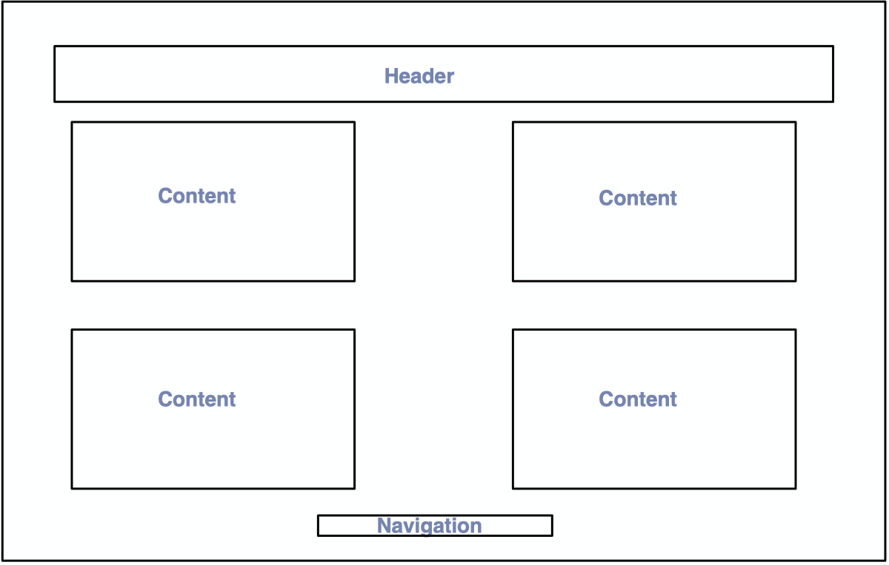
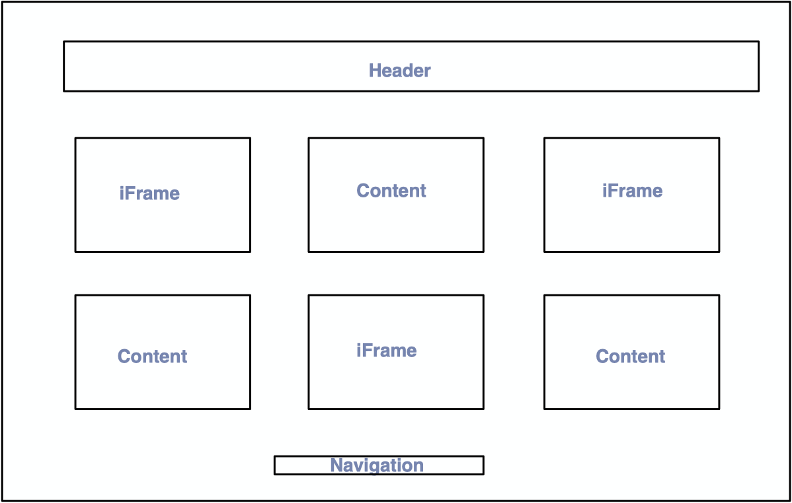

180-Turning Lives around is an incredible group that has helped countless families and continues to do so. Their focus is on giving help when needed, helping people find help, and educating people on the dangers of domestic violence. I would like to create a site that helps people find the help they need in a safe way. Finding and asking for help is often scary and dangerous. This site will act as a simple news page until clicking a button. Once the button is clicked it will take the user to a page where they can find help in their area, a page where they can find instantanous help such as the number for a hotline, and finally a page with empowering and calming messages of hope and strength.

